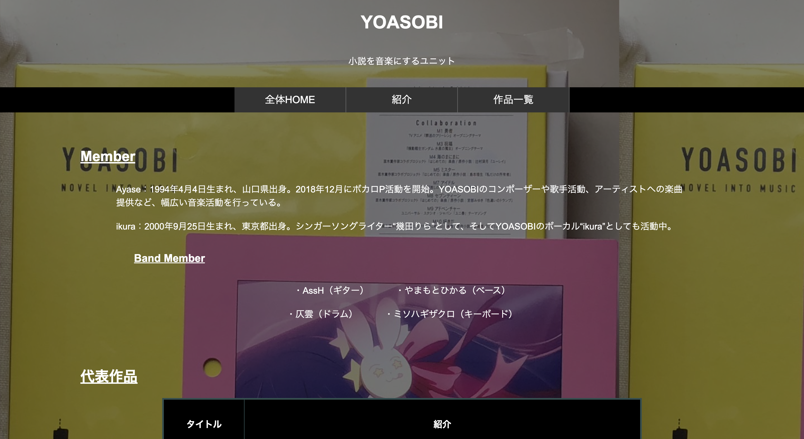
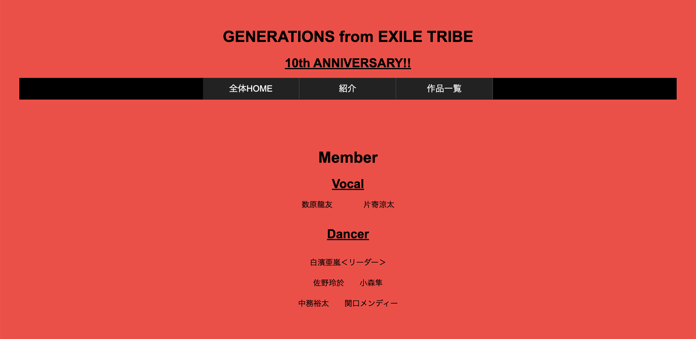
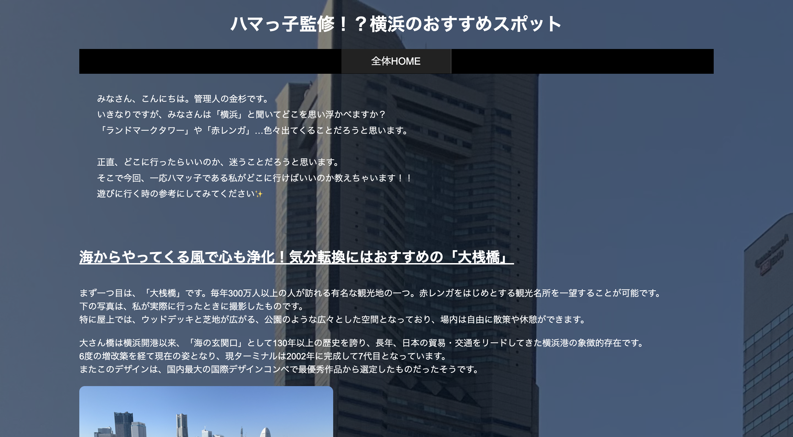

〜ピンクの人こと？金杉幸輝です〜
知る人ぞ知る大学敷地内にあった某カレー店がカフェへと生まれ変わります。
授業の合間にホッと一息していきませんか。
こちらのサイトを制作するにあたって、CSSを利用することができなかったため、思った通りのデザインを制作することはできませんでした。
しかし、その分内容を比較的充実したものにすることを目指しました。
知る人ぞ知る大学敷地内にあった某カレー店がカフェへと生まれ変わります。
授業の合間にホッと一息していきませんか。
私の人生史上、初めてCSSを利用してWebサイトを制作したため、これまでにない新鮮な気持ちで取り組むことができました。
初めて触れたため戸惑うこともあり、理想通りに制作するのは難しかったですが、いい学びになりました。

今や世界的大人気を誇るYOASOBI。2023年時点まででどのような記録を残したのでしょうか。
簡易的ではありますが、私なりにまとめてみました。
授業第5回までの内容を踏まえて、制作したサイト。今回は私が好きなアーティスト「YOASOBI」についてのサイトを制作しました。
今ある自分の力で取り組みましたが、もう少しデザインを凝ったものが作りたかったです。
授業での学びを今後に活かし、納得のいくサイトを制作できるように励みます。

自由課題1で取り上げたテーマは、共通課題で取り上げたアーティストとは別のアーティスト「GENERATIONS from EXILE TRIBE」についてのサイトを制作しました。

自由課題2で取り上げたテーマは、私の地元である「横浜」のおすすめスポットについてまとめてみました。
サイトに載せた画像のうち2枚は自分で訪れた際に、撮影したものです。
あなたが入力した数値（n ≧ 2）を用いて素数かどうかを識別します。
数値以外を入力した場合は、全体HOMEに戻るようになっています。
素数か素数でないかで遷移する画面が違うので、試してみてください。
当初、企画していたサイトは他のサイトを跨いで、機能が作動するものを考えていました。
しかし、思ったよりもハードルが高かったことから、変更して入力された値を素数かどうかの識別をする機能を実装しました。
また、入力されたものが数値か数値でないものか、素数か素数でないかの識別の仕方には少々手こずりました。